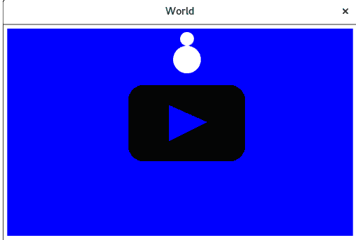
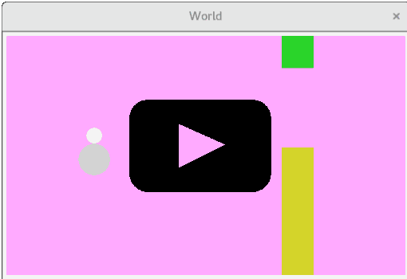

My experience teaching my kids some programming
As a professional software developer, and with my older daughter Lara being 11 years old, and the second one Kristina 8, I figured it made sense to spend some time trying to introduce them to programming. My father introduced me to it at a slightly later age, but still relatively early (it was some BASIC dialect at the time).
After some research I decided to eschew the usual choice of Scratch because I thought it too imperative, not emphasizing enough programming as composition of smaller pieces, and not being something you can easily grow from to more classical programming languages. I may have been wrong on this, I confess that I didn’t spend as much time researching Scratch as I should have.
I’ve spent some time considering which language to use, but it was a true coincidence that I was listening one day to the Functional Geekery podcast interview of Conrad Barski, where he mentioned his Land of Lisp book, and its Realm of Racket sequel. I’ve had the wish to learn a lisp for some time, and I’m also biased towards more functional languages and approaches (FP). So I bought the book, which was a great source of inspiration. I also ordered a Scratch book at the same time, but I actually never opened it, because it became quickly clear to me that racket was going to be the one.
The racket language, as a scheme dialect (itself a lisp dialect), seems like a great fit for teaching children:
- very little syntax
- no keywords, translate-able (see below)
- very good libraries and material for teaching, like HtDP
- a REPL and the DrRacket IDE
In addition the Realm of Racket book is built around the idea of building increasingly complex games to introduce children to programming, which I thought was a great approach.
For older children with some experience in mathematics, I would actually consider haskell, but at this age I think racket is a great option.
We worked through weekly ~1h sessions through the summer, with little or no material prepared ahead of time. Most of the time I would write the skeleton of the code and ask them to modify it to achieve the function. Children were not independently writing code from scratch. Due to that, it’s a question how much programming they actually learned. We did work on their geometry skills when working on the game, at the very least.
I don’t claim to have achieved anything better than if we had went with Scratch. Maybe it would have been a better choice in the end. I don’t know Scratch enough to make a judgment on that.
I’ve put slightly edited versions of the source code we’ve produced on github.
Getting ready
When I picked racket as a teaching language, I didn’t know it myself. To prepare myself, I wrote a tetris-like game in racket. It worked out well enough that I was convinced that was the way forward also for my teaching plans.
Prerequisites
Racket’s standard library functions are obviously named in English. I decided to try as much as possible to translate function names to Slovenian, which is the language my children are fluent in. Something like that would be impossible in many traditional languages, but it’s no problem do it in racket (well, I still had to ask). Thanks to this, the core scheme function define became naj-bo, if became če, and so on. I also translated many library function names.
An issue that turned up with that though, was that error messages (compile errors) would still come up in English, and were then even more baffling to children than they would be otherwise (you can’t relate to an ‘undefined’ error message if you didn’t actually use ‘define’ in the first place..).
When I’ll give example code from now on, I’ll use English, but we did actually type it in Slovenian with the children.
Beginnings
We started the first session by playing with the REPL in DrRacket, so performing basic arithmetic and viewing the results. So, expressions like (+ 1 2), also defining variables, like creating a variable for each their names having as value their age, and calculating the age difference:
(define lara 11)
(define kristina 8)
(- lara kristina) ;; age difference
(define year 2016)
(- year lara) ;; birth yearThey would then create such variables for other family members, and computing age differences or even sums, then we would look at nested expressions like (/ (+ 6 4) 2) (which is (6+4)/2). Thanks to the interactivity of the REPL, what could be very confusing was not that problematic in the end.
We then moved to the first exercise from the Realm of Racket book: guess the number. The player picks a number between 0 and 100, the computer must guess it, the player answers with ‘too high’, ‘too low’ until the computer finds the number. The insight is to write the app relying entirely on the REPL: you communicate with the computer by calling functions, so no need for mechanisms to parse user input for instance.
A first implementation looks like that:
#lang racket
(define minimum 0)
(define maximum 100)
;; guess => try the middle of the interval
;; quotient is integer division
(define (guess)
(quotient (+ minimum maximum) 2))
;; set! overwrites a value
;; sub1 subtracts 1
;; => overwrite the maximum to become guess-1
;; and then guess again
(define (smaller)
(set! maximum (sub1 (guess)))
(guess))
;; add1 adds 1
;; => overwrite the minimum to become guess+1
;; and then guess again
(define (bigger)
(set! mininum (add1 (guess)))
(guess))This is actually simplified from the book, removing some subtleties to stick the minimum more or less working solution.
A session of playing this game looks like that (again, example from the book):
The hardest thing here was explaining the binary search algorithm. But they got it, it’s pretty intuitive in the context of guessing a number. They quickly understood that picking the number in the middle of the interval would get the result faster, although of course their first plan was to try 1, then 2, and so on.
Regarding the implementation, while I’m not a great fan of the mutation, it’s pretty concise, and the game was a great success with the kids. We proceeded to expand it, changing the range of numbers, and also detecting when we knew we won (when upper is equal to lower) – an idea of the kids.
At that point it was mostly me changing the application itself, but I would ask the children what part of the program should be changed to achieve the new feature, and what exactly would they change. We would try every suggestion from the children, including those that were obviously not going to work, so that they could see the effects of the changes by themselves. I think that was an important aspect, that they could grasp this sense of interactivity and control.
Then I would slowly have them make the changes themselves and try them out.
Graphics
One of the articles that inspired me preparing the plan for the graphics was that one about the CodeWorld teaching language, and in particular this paragraph:
Another change here was originally an accident. CodeWorld, from the beginning, did not implement using any kind of image file in a program. Originally, this was because I hadn’t bothered to implement a UI for uploading assets to use in the web-based programs! But after teaching with it, I don’t regret it at all. I’ve had other teachers tell me the same thing. By giving students only geometric primitives, not images copied and pasted from the web, as the tools for their projects, they are more creative and work with a lot more mathematics in the process.
So I also decided to forgo images and have all drawings being combinations of basic primitives (triangles, rectangles, circles…). Our first exercise was some drawing, and halfway through it we came up together with the children to the idea of our hero being a snowman. Being drawn as two circles, it was a perfect match.
Drawing our hero
I found the style in Realm of Racket to be excessively using mutation and local define calls, so I did introduce the threading macros1, explaining just that they help chaining calls.
So our first graphical program drew our snowman:
#lang racket
(require 2htdp/image)
(require threading)
(~> (rectangle 100 100 "solid" "blue")
(place-image/align
(circle 20 "solid" "white") 30 60 "left" "top" _)
(place-image/align
(circle 10 "solid" "white") 40 40 "left" "top" _))To draw our snowman, I prepared the code to draw the background rectangle and the lower circle, then asked the children to modify the program to draw the second circle in the right position and at the right size. Their success showed that they had at least some understanding of the program structure and of the geometry involved. Thank you CodeWorld!
Also thumbs up to DrRacket for displaying pictures in the REPL output!
The Big Bang
After drawing, we could move to the next step: animating! This is where the killer application for racket for teaching comes up: the big-bang function. Big bang, part of the “How to Design Programs” suite, guides the developer in organizing the application’s state in a single structure, then providing functions to evolve that state when the following events (or many other types of events) occur:
- time passing
- keyboard/mouse events
- endgame detection
So all you need for a functional game is an initial state, a drawing function taking the state, and functions to transform the state when any of those events occur.
The first obvious program we built was to have the snowman fall on the display. Our state is a single integer: the y position of the snowman, and it increases with time. We also modify our existing snowman function to take as a parameter the vertical offset at which to draw.
#lang racket
(require 2htdp/image 2htdp/universe)
(require threading)
;; the snowman function now takes the Y offset as parameter
(define
(snowman position)
(~> (rectangle 500 300 "solid" "blue")
(place-image/align
(circle 20 "solid" "white") 240 (+ position 20) "left" "top" _)
(place-image/align
(circle 10 "solid" "white") 250 position "left" "top" _)))
(big-bang 0 ;; the initial state is the integer 0
(on-tick add1) ;; increase the Y offset with time
(on-draw snowman)) ;; will be called with the state as parameter
At first the children modified the snowman function to take the vertical offset (experimenting with several values until they got it right), then we plugged in the big-bang.
I expected that the origin of the coordinate system being the top-left would be a problem, but it turned out to be no issue at all. And, in hindsight, why would it be? At that age, they were never exposed to any cartesian coordinate system!
We later expanded the program to detect when the snowman would hit the bottom of the screen (that it didn’t stop there out of the box proved surprisingly annoying to the children), and also added some control on the position by pressing the up and down arrow keys:
;; did we reach the bottom of the screen?
(define (end? position)
(>= position (- 300 60)))
;; create an updated state on key press
(define (keypress position key)
(match key
[(== "up") (- position 10)]
[(== "down") (+ position 10)]
[else position]))
;; two new clauses: stop-when and on-key
(big-bang 0
(on-tick add1)
(on-draw snowman)
(stop-when end?)
(on-key keypress))Structs and a real game
At this point we were thinking what to build going forward and we settled on a Flappy Bird clone. The game is actually amazingly simple: the bird only moves vertically, then you have a list of obstacles which move towards the left, and differ among themselves only by the vertical position of the opening.
That means the state for the game is only:
- an integer representing the vertical position of the bird
- an integer representing the horizontal offset of the obstacles
- a list of integers being the vertical offsets of the openings of the displayed obstacles
In reality we would also need a vertical acceleration for the bird (and probably also a points counter), but for our purpose, we could skip that.
We already had the character, and knew how to move it vertically on the screen, and how to react to keys. We needed to draw obstacles, and work with that more complex state. But to define that state we need structs, which I had not introduced yet: our state so far was only an integer, which was not enough.
At the time I was reading a prolog book which has many examples related to families and it struck me that this is one concept that would be crystal-clear to children. So we spent some time with examples like:
;; structure named 'family' with three fields
(struct family (father mother children) #:transparent)
;; define a family, bind it to the my-family variable.
(define my-family (family "emmanuel" "simona" "lara"))
;; to read a field you call the function <struct name>-<field name>
(family-mother my-family) ;; outputs "simona"
(family-father my-family) ;; outputs "emmanuel"And so on. The #:transparent is pretty unfortunate, it’s required among others so that the contents of the struct are nicely displayed by the REPL. Originally I intended to have the children be a list, but in the end I backed off, didn’t want to already introduce the concept of a list right then, also because non-graphic programming was much less attractive to the kids at this point (a difficult balance, that.. you want to build on the basics but you have to keep them motivated at all times…).
Anyway to introduce the new feature we had with structures, we expanded the program we had by having a 2D position for the snowman, X and Y, taking advantage of all the arrow keys.
That lesson was pretty boring for the kids as the code porting was pretty mechanical (previously the state was simply the Y of the snowman, now we had to call game-state-position-top to extract it) and unfortunately I did most of it myself. But they had fun playing with the updated game afterwards and the eldest daughter could understand structs much better after that. It was very tough for the younger one though.
I also considered introducing pattern-matching, where you give the “shape” of the data to deconstruct it and extract the field(s) you’re interested in2.
;; our game state-state struct has two fields: position top & left
(struct game-state (position-top position-left) #:transparent)
;; no pattern matching
(define (end? state)
(>= (game-state-position-top state) (- 300 60)))
;; pattern matching
;; extract the first field of the game-state to the variable 'top'
(define/match* (end2? (game-state top _))
(>= top (- 300 60)))But already the introduction of structs was well enough without adding more concepts, so I renounced it. The code is more verbose, as in Realm of Racket, with many define calls, but it was the best compromise at that point.
Flappy bird
To implement flappy bird, we started by scrapping the left/right movement of the snowman, and add the drawing of pillars. Pillars are simply drawn through two rectangles. The girls did come up with the coordinates for the pillars although the geometry started being tough for the younger one.
Also the oldest one gave us a good surprise when after the lesson she took the initiative to modify the program on her own to redecorate the game by adding many colors.
;; the state has the top position of the snowman
;; and the left position of a pillar
(struct game-state (position-top position-left) #:transparent)
;; a pillar is two rectangles
(define
(pillar drawing state)
(~>
(place-image/align (rectangle 40 100 "solid" "green")
0 0 "left" "top" drawing)
(place-image/align (rectangle 40 80 "solid" "yellow")
0 220 "left" "top" _)))
(define
(draw-game state)
(define position-left (game-state-position-left state))
(define position-top (game-state-position-top state))
(~> (rectangle 500 300 "solid" "violet")
(snowman position-left position-top)
(pillar state)))
;; move the snowman down with time, and the pillars left with time
(define (ticker game-state)
(game-state (add1 (game-state-position-top game-state))
(sub1 (game-state-position-left game-state))))
As a final step, we made the Y position of the opening in the pillar configurable. The maths and the geometry of that were are the limit of what the kids could do. The next steps would be to manage a list of pillars to show, with random opening heights for each of them… Many new concepts again.
At that point we had reached the end of the summer holidays (we only programmed when at home, not when at the seaside and so on), and we called it a day, because with school and extra-school activities, the kids already have their hands full!
Epilogue
Racket is fun!
But the truth is, at this point I still don’t know for sure whether Scratch would have been a better choice and maybe racket was the selfish choice for me (more fun). But among “traditional” languages, I’m very confident racket was the best option.
Asking the kids, they liked it, although the youngest one (at 8) had a hard time towards the end. I do think they picked up some geometry at least along the way, and also got a better idea how computer programs work.
We’ll see when we resume this work. As I said, during the school year it’s never easy. Certainly at worst next summer we’ll do again something like that.
My eldest, at 11, will have a course of programming at school this year, using Scratch. I’m curious of what she’ll tell me about how much her experience with racket helped or not.